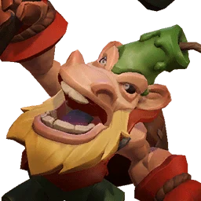

You no take candle!

Rumble Collection Tracker: game data
The signed game data the tracker downloads. Nothing to see here but a kobold guarding his candle.
Unofficial fan project, not affiliated with or endorsed by Blizzard Entertainment. Warcraft Rumble and its art © Blizzard Entertainment, Inc.